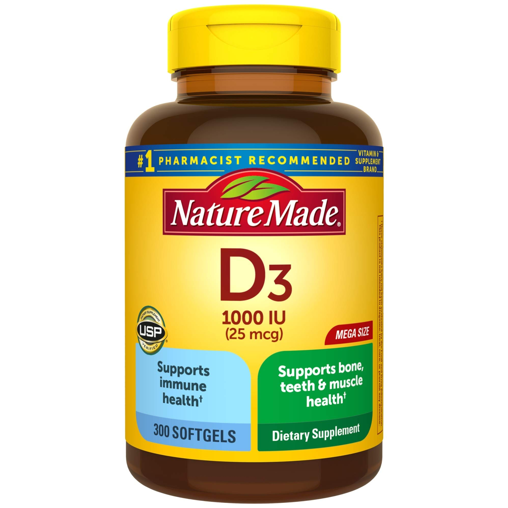
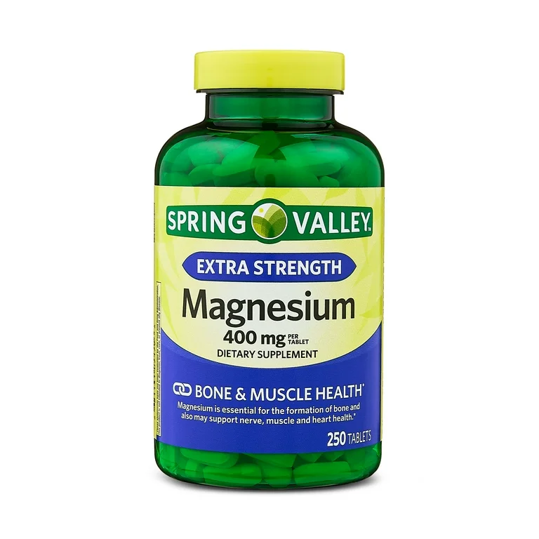
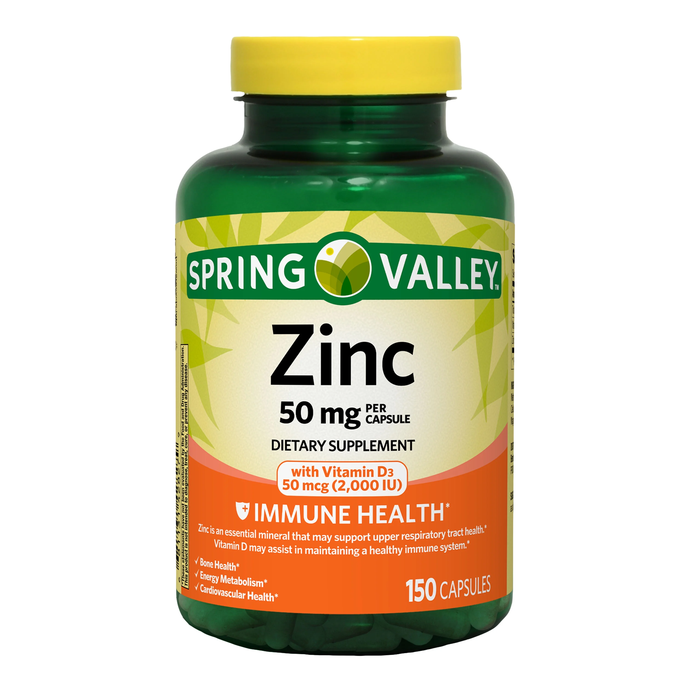
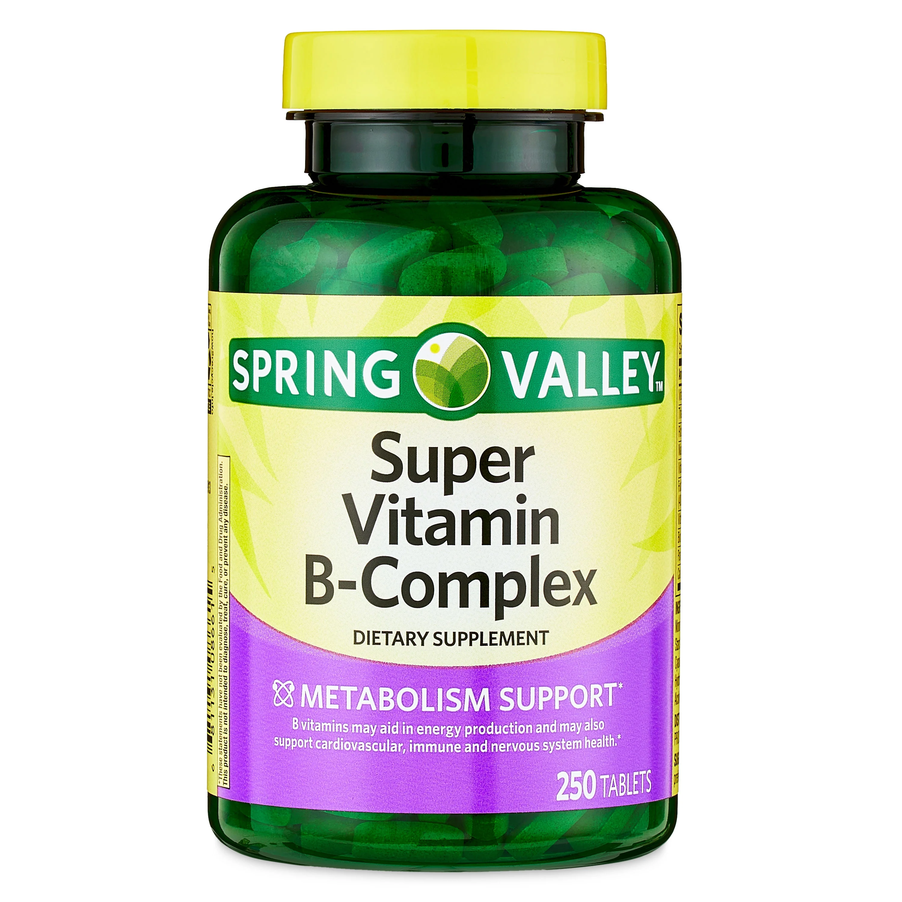
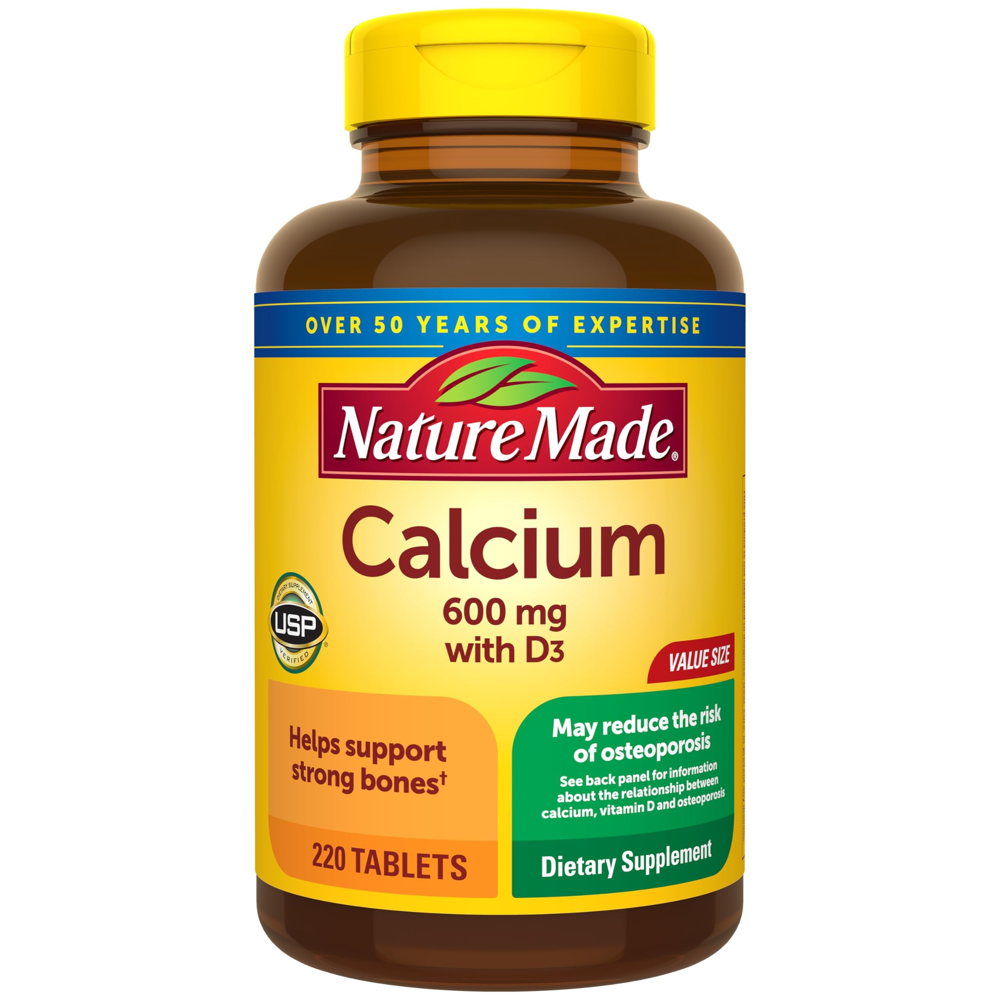
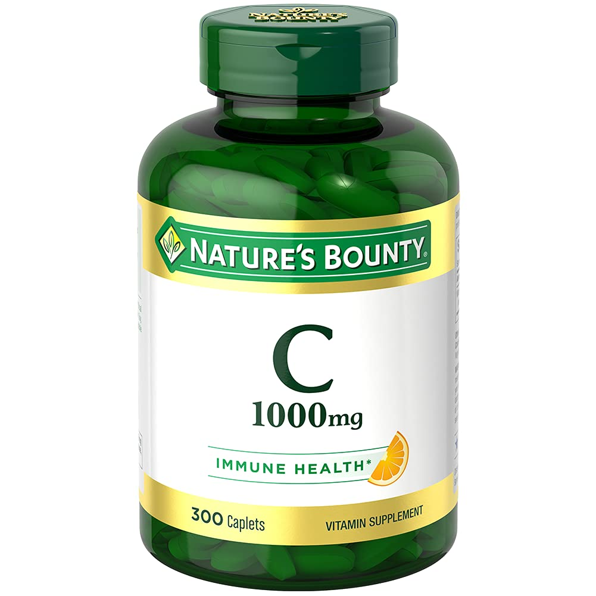
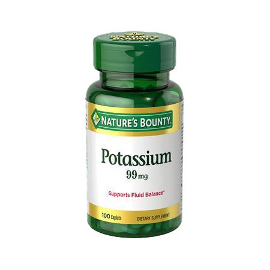
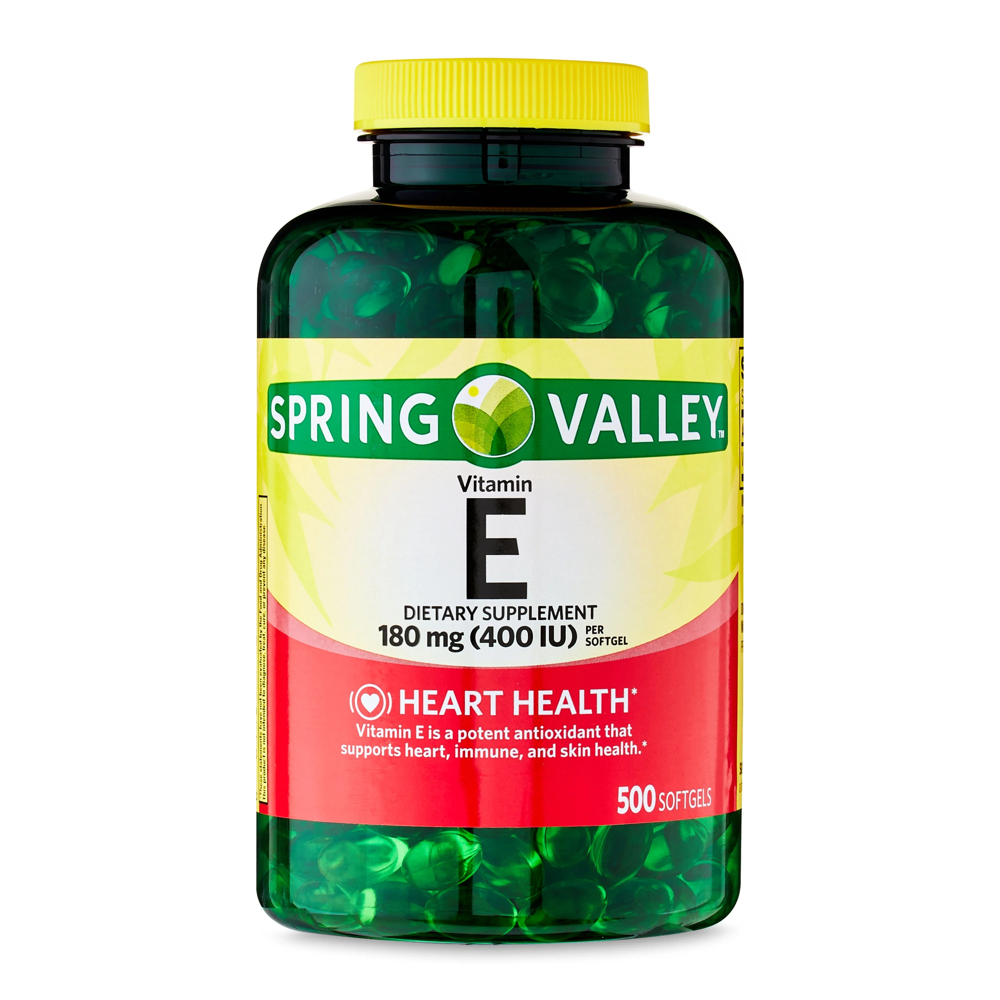

Vitamin D
Essential for bone health, immune function, and muscle strength.
Recommended Dosage: 2000-4000 IU daily
- Supports calcium absorption
- Enhances muscle function
- Boosts immune system
- May improve athletic performance
- Enhances muscle function
- Boosts immune system
- May improve athletic performance
Monitor levels through blood tests. Higher doses may be needed for deficient individuals.
Magnesium
Critical for muscle function, energy production, and recovery.
Recommended Dosage: 400-500mg daily
- Reduces muscle cramps
- Improves sleep quality
- Supports energy metabolism
- Aids in protein synthesis
- Improves sleep quality
- Supports energy metabolism
- Aids in protein synthesis
Take with food to avoid digestive issues. May cause drowsiness.
Zinc
Important for immune function, protein synthesis, and hormone production.
Recommended Dosage: 15-30mg daily
- Supports muscle repair
- Enhances immune function
- Aids in protein synthesis
- Maintains hormone levels
- Enhances immune function
- Aids in protein synthesis
- Maintains hormone levels
Take with food. High doses may interfere with copper absorption.
B-Complex Vitamins
Essential for energy production and red blood cell formation.
Recommended Dosage: 100% DV of each B vitamin
- Supports energy metabolism
- Aids in recovery
- Enhances cognitive function
- Helps with stress management
- Aids in recovery
- Enhances cognitive function
- Helps with stress management
May cause bright yellow urine. Best taken with breakfast.
Iron

Critical for oxygen transport and energy production.
Recommended Dosage: 18mg daily (higher for women)
- Prevents fatigue
- Improves endurance
- Supports red blood cell production
- Enhances oxygen delivery
- Improves endurance
- Supports red blood cell production
- Enhances oxygen delivery
Only supplement if deficient. Get levels tested regularly.
Calcium
Essential for bone health, muscle contraction, and nerve function.
Recommended Dosage: 1000-1200mg daily
- Strengthens bones
- Supports muscle function
- Aids in nerve signaling
- Prevents stress fractures
- Supports muscle function
- Aids in nerve signaling
- Prevents stress fractures
Take in divided doses. Don't combine with iron supplements.
Vitamin C
Antioxidant support and collagen production.
Recommended Dosage: 500-1000mg daily
- Supports immune function
- Aids in collagen synthesis
- Enhances recovery
- Improves iron absorption
- Aids in collagen synthesis
- Enhances recovery
- Improves iron absorption
High doses may cause digestive issues. Split throughout the day.
Potassium
Essential for muscle function and hydration balance.
Recommended Dosage: 2000-3000mg daily
- Prevents muscle cramps
- Supports hydration
- Aids in nerve function
- Regulates blood pressure
- Supports hydration
- Aids in nerve function
- Regulates blood pressure
Best obtained through diet. Supplement only if needed.
Vitamin E
Powerful antioxidant that supports muscle recovery and immune function.
Recommended Dosage: 15mg (22.4 IU) daily
- Reduces exercise-induced oxidative stress
- Supports muscle recovery
- Enhances immune system
- Promotes cardiovascular health
- Supports muscle recovery
- Enhances immune system
- Promotes cardiovascular health
High doses may interfere with blood clotting. Avoid if on blood thinners.